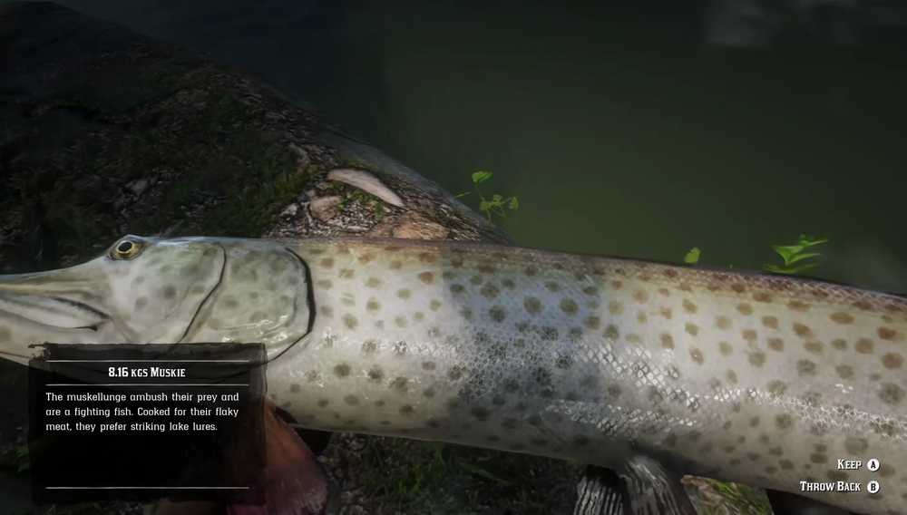

Muskies are long, slender-bodied, predatory fish, inhabiting norther lakes. They will ignore food baits and favor lake lures. Muskie are most active on cloudy, overcast days. There are legends of a monster Muskie having been sighted off the coast of Roanoke Ridge.
Owanjila, Lake Isabella, Grizzlies East, Kamassa River, Lannahechee River.
